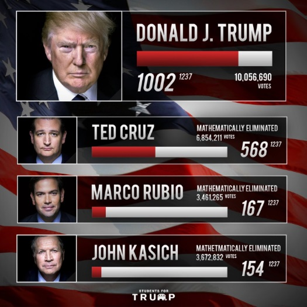
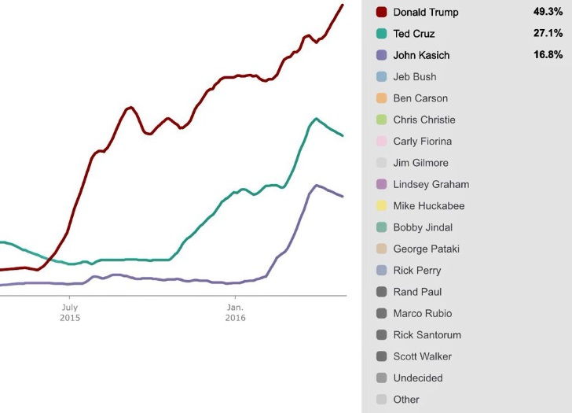

2016 GOP Race
April / May 2016 update
Can the Trump Train be stopped?
The all important California primary is only a few weeks away. If Donald Trump does well in the states prior to California then he will be the 1st ballot nominee.
Delegate Update
Donald Trump needs 235 more delegates to secure the nomination on the first ballot.
GOP National Polling
GOP Race Videos
Donald Trump April Speech on Foreign Policy plans.
GOP Race Videos
Bobby Knight speaks at Evansville, IN rally
GOP Race Videos
Indiana Primary Rally collage video
GOP Race Videos
Trump Campaign promo
Summary
Ted Cruz and John Kasich have been mathematically emilinated. Donald Trump is the only candidate remaining that can reach 1237 to secure the nomination. He holds a large lead in the California polls. This concludes that if Trump performs well in the upcoming primaries before CA, then there will be no doubt he will clinch.
“Trump is the Nominee”
--Newt Gingrich
Code
Use the <code>
<!doctype html>
<html lang="en">
<head>
<meta charset="UTF-8">
<title>Trump2016</title>
</head>
<body>
<h1> "Make America Great Again" </h1>
</body>
</html>